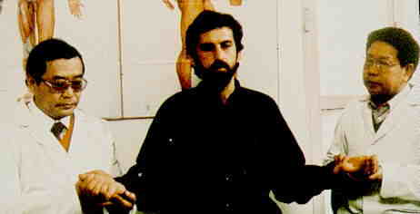

Caro Diario A-, A- Italy/1994/Yellow English Subtitles/Color/Widescreen 1.66:1/Stereo/100 minutes/Directed by Nanni Moretti/Starring Nanni Moretti/Fine Line/22 Chaps/Theatrical Trailer/CLV/$39.99 This is the kind of off-beat film that defies adequate description. Clearly, it’s like spending a couple of hours in the company of a amiable acquaintance, getting to know him a bit more and hoping to have the chance to spend more time with him. Caro Diario is divided in sections denoted as chapters and headed in order On My Vespa, Islands, and finally, Doctors. The first section follows Moretti riding on his Vespa mostly around Rome for an off-beat look at the Eternal City, with an occasional foray outside the  city boundaries. Moretti’s observations are more often than not hilarious and the pattern of his tour is completely zany. The accompanying soundtrack is primarily upbeat Latin music that embellishes the tour with an additional mad-cap element.After visiting the site of filmmaker Pier Paulo Pasolini’s 1975 murder, Moretti embarks on the second leg of his search for the meaning of, the meaning of what. Joined on his island hopping cruise by a friend who has lived on the island of Lipari for eleven years, together they ponder the merits, pleasures and drawbacks of the different islands. Along the way his friend becomes addicted to television, which leads to a bizarre encounter with a group of American tourists. The island hopping ends with Moretti’s friend raving against the philosophical detractors of television, leading in to part three, which opens by Moretti stating that nothing in this final chapter has been made up. Chapter three deals with Moretti’s battle with cancer, beginning with the filming of a chemotherapy treatment. This final section of the film, though laced with brilliant humor, is certainly most touching. I kept wondering about the sequence of events and whether Moretti’s preface was really true. The endless pursuit of a cure for his incessant itching leads back to the initial depiction of his treatment for cancer. This is an intimate and human film that will not soon be forgotten. The colors on the disc are bright and vivid, capturing the spirit of filmmaker Moretti. The soundtrack is punchy and balances well with the dialogue. The color timing of the film is consistent and the pressing very clean. The yellow subtitles are easy to read and appear at the very bottom of the picture and not in the black letterbox bands. Take a chance on this film of a different dimension. It is a rewarding experience. |